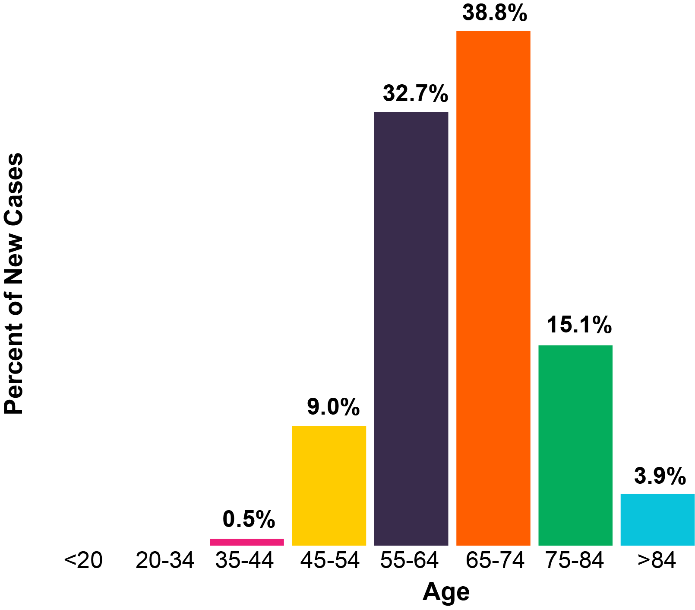

1 EPIDEMIOLOGÍA DEL CÁNCER DE PRÓSTATA
El cáncer de próstata es el tumor maligno más frecuente en el varón en países occidentales y el segundo más letal por detrás del cáncer de pulmón, estimándose 164.690 nuevos casos y 29.430 fallecidos en un año, sólo en Estados Unidos (SEER Statistics 2018). A nivel mundial se diagnostican más de 1.000.000 de casos al año, y fallecen más de 300.000 pacientes por año en todo el mundo.
El aumento de su incidencia en los últimos años se ha asociado en parte a la universalización del screening con el antígeno prostático específico (PSA), aunque parece haberse estabilizado en los últimos años.

Cáncer de próstata, el tumor más frecuente en varones en países occidentales
(Siegel, Cancer Statistics 2016)
El pronóstico va a depender del estadio inicial, diagnosticándose la mayoría de los casos en estadios precoces (ver Figura), siendo sólo un 5% de todos los pacientes con cáncer de próstata metastásicos de inicio. La edad media al diagnóstico son 66 años, aumentando la incidencia de nuevos casos a partir de los 55 años.
Porcentaje de casos de cáncer de próstata por estadio al diagnóstico y supervivencia a 5 años
(SEER 18 2008-2014, All Races, Males by SEER)
1.1 Factores de riesgo
Aunque todavía se desconocen las causas específicas que determinan el inicio y la progresión del cáncer de próstata en cada caso, aunque se asume un origen multifactorial, influido por determinantes genéticos y modificadores ambientales responsables del inicio y evolución del proceso de oncogénesis en esta enfermedad. En estudios epidemiológicos clásicos y moleculares se han identificado diversos factores potenciales de riesgo:
La edad es un factor de riesgo fundamental El cáncer de próstata es una enfermedad cuya incidencia comienza a aumentar a partir de los 55 años, tal como se refleja en la figura a continuación. Numerosos estudios demuestran que la probabilidad de padecer un cáncer de próstata aumenta con la edad, aunque en muchas cosas será sublcínico, identificándose en el 30% de los especímenes de autopsias de los varones en su cuarta década, en el 50% en su sexta década y en más del 75% en los mayores de 85 años.
La historia familiar Se define como agregación familiar de cáncer de próstata a la presencia de al menos 3 casos afectos en la misma rama, o 2 casos afectos que han desarrollado cáncer de próstata a una edad precoz (< 55 años). La causa genética más frecuente en nuestro medio es la presencia de mutaciones en línea germinal en BRCA2 que conferiría además el mayor riesgo de desarrollar la enfermedad (RR=8.6 veces en hombres ≤65 años).Estudios recientes han descrito otros genes asociados a defectos en la reparación del ADN, que estarían implicados en cáncer de próstata (ATM, PALB2..). La probabilidad de ser portador de estas alteraciones podría llegar al 10% en población española cuando el test se realiza en pacientes con cáncer de próstata avanzado resistente a la castración tal como revela el estudio PROREPAIR promovido por CNIO. A falta de validación, la presencia de estas alteraciones podría asociarse a un peor pronóstico y tumores más agresivos.
La raza El cáncer de próstata es poco frecuente en países asiáticos, mientras que alcanza su mayor incidencia en la población afro-americana.
El síndrome metabólico En estudios observacionales, la presencia de hipertensión y aumento del diámetro de la circunferencia (>102 cm) se ha asociado a mayor riesgo de desarrollar cáncer de próstata. No se ha demostrado que la hipercolesterolemia esté asociado.
Factor dietético El consumo elevado de alcohol, se ha asociado a un mayor riesgo. Las concentraciones tanto elevadas como en déficit de vitamina D también se han asociado a un mayor riesgo, significativo especialmente en la enfermedad de alto grado. No se ha encontrado asociación con el consumo de carne, aunque sí podría existir una asociación con las dietas ricas en grasa. Estas asociaciones están basadas en estudios epidemiológicos.
Fármacos El uso de inhibidores de la 5-alfa reductasa se ha asociado con una disminución del riesgo de cáncer de próstata (especialmente de bajo grado). Sin embargo, entre sus efectos adversos está descrito un pequeño aumento en el incremento del cáncer de próstata de alto grado, y por esta razón ninguno de estos fármacos tiene aprobada la indicación de tto preventivo. No se ha demostrado que los suplementos de testosterona en hombres con hipogonadismo se asocien a aumento de cáncer de próstata.
Otros factores de riesgo La calvicie y el tabaquismo se han asociado con aumento de muerte por cáncer de próstata, la gonorrea con un aumento en la incidencia. La circuncisión y una vida sexual activa se han asociado con un efecto protector.
1.2 Cribaje poblacional
El cáncer de próstata subclínico es frecuente en hombres por encima de los 50 años de edad, tal como se ha comentado previamente. Se han llevado a cabo estudios aleatorizados para evaluar el papel del cribaje de hombres entre los 55 y los 69 años usando el análisis del PSA (antígeno prostático específico). Tras un seguimiento de 13 años, el ensayo de cribaje más importante a nivel europeo (European Randomized Study of Screening for Prostate Cancer, ERSPC) demostró una disminución en el riesgo de morir por cáncer de próstata del 21%.
Sin embargo, este beneficio supone una elevada tasa de sobrediagnóstico y sobretratamiento. Así, se estima que para prevenir una muerte por cáncer de próstata, 781 hombres sanos serán sometidos a cribaje, y 27 recibirán tratamiento (sin impacto en supervivencia). Por esta razón, las guías de la Sociedad Europea de Oncología Médica recomiendan no realizar cribado en hombres mayores de 70 años asintomáticos. Las guías europeas de Urología recomiendan realizar estrategias de prevención precoz de forma individualizada a partir de los 50 años (o a partir de los 45 años si existe historia familiar), tras ofrecer información completa al paciente y seleccionando a aquellos hombres con una esperanza de vida de al menos 10-15 años.